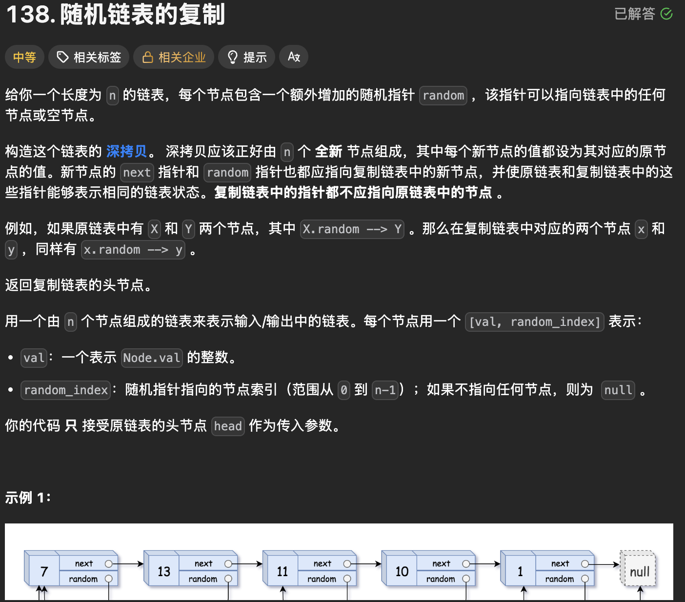
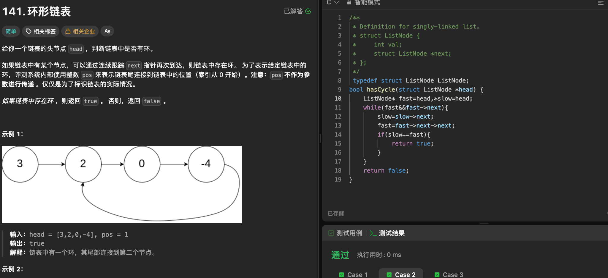
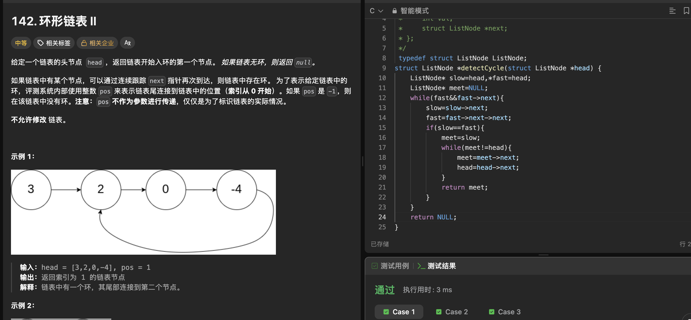

链表 OJ：随机链表复制与环形链表
这篇是我复习链表时整理的三道 OJ 题：138 练习复制 random 指针，141 判断有没有环，142 在有环的基础上找入口。代码保留我提交时的写法，只调整了排版。
1. LeetCode 138 随机链表的复制
题目

每个节点除了 next，还有一个可能指向任意节点或 NULL 的 random。要新建一条深拷贝链表：节点的值和指针关系相同，但复制链表中的指针不能指回原节点。
核心思路
把复制节点紧跟在原节点后面插入：
原链表： A -> B -> C
交叉插入：A -> A' -> B -> B' -> C -> C'
这样，原节点 cur 的复制节点就是 cur->next。如果 cur->random 指向原节点 X，那么 X 后面的 cur->random->next 就是 X 的复制节点，可以赋给 copy->random。最后把复制节点串成新链表，并恢复原链表。
我的代码
/**
* Definition for a Node.
* struct Node {
* int val;
* struct Node *next;
* struct Node *random;
* };
*/
typedef struct Node Node;
struct Node* copyRandomList(struct Node* head) {
Node* cur = head;
while (cur) {
Node* copy = (Node*)malloc(sizeof(Node));
copy->val = cur->val;
copy->next = cur->next;
cur->next = copy;
cur = copy->next;
}
cur = head;
// 处理 random
while (cur) {
Node* copy = cur->next;
if (cur->random == NULL) {
copy->random = NULL;
}
else {
copy->random = cur->random->next;
}
cur = copy->next;
}
// 把复制链表拿下来
cur = head;
Node* copyhead = NULL, *copytail = NULL;
while (cur) {
Node* copy = cur->next;
Node* next = copy->next;
if (copytail == NULL) {
copyhead = copytail = copy;
}
else {
copytail->next = copy;
copytail = copytail->next;
}
cur->next = next;
cur = copy->next;
}
return copyhead;
}
重点知识点与易错点
- 为什么交叉插入？ 它利用
next建立了“原节点 → 复制节点”的对应关系：每个原节点的下一个节点就是自己的副本，因此不用另建映射表。 random的关键一行：copy->random = cur->random->next;。先通过cur->random找到它指向的原节点，再走一步next找到那个节点的副本。必须先判断cur->random是否为NULL，否则会访问空指针。- 插入顺序不能换： 先让
copy->next = cur->next保存后续原节点，再让cur->next = copy。若先覆盖cur->next，就可能找不回后面的链表。 - 拆分时别只顾新链表。
next = copy->next保存当前原节点的下一个原节点；cur->next = next恢复原链表。随后把copy接到复制链表，并继续处理next。我这份代码用cur = copy->next前进，此时copy->next仍保存着那个原节点。
复杂度： 时间 O(n)；额外辅助空间 O(1)。新建的 n 个复制节点是题目要求的结果，不计入辅助空间。
2. LeetCode 141 环形链表
题目

给定链表头节点，判断沿 next 走下去会不会再次到达某个节点。有环返回 true，无环返回 false。题目里的 pos 只是评测系统描述“尾节点连回哪里”的方式，不会传进函数。
核心思路
使用快慢指针：slow 每次走一步，fast 每次走两步。有环时，两者进入环后会相遇；没有环时，fast 会走到链表末尾。
我的代码
/**
* Definition for singly-linked list.
* struct ListNode {
* int val;
* struct ListNode *next;
* };
*/
typedef struct ListNode ListNode;
bool hasCycle(struct ListNode *head) {
ListNode* fast = head, *slow = head;
while (fast && fast->next) {
slow = slow->next;
fast = fast->next->next;
if (slow == fast) {
return true;
}
}
return false;
}
重点知识点与易错点
- 循环条件要同时检查
fast和fast->next：while (fast && fast->next)。只检查fast，下一句fast->next->next就可能对空指针取next。&&会从左到右短路判断。 pos不是参数。 函数只接收head，靠指针是否再次相遇判断有环。- 第一次
slow == fast只说明有环。 相遇点通常不是环入口；141 到这里就可以返回true，找入口要看下一题。
复杂度： 时间 O(n)，空间 O(1)。
3. LeetCode 142 环形链表 II
题目

这次要返回环的入口节点；没有环返回 NULL。题目要求不修改链表，pos 仍只是测试数据的说明，并非函数参数。
核心思路
第一阶段与 141 相同：slow 一步、fast 两步，先找到环内第一次相遇点。第二阶段让 meet 从相遇点出发，让 head 从链表头出发，两个指针都每次走一步；再次相遇的位置就是环入口。
我的代码
/**
* Definition for singly-linked list.
* struct ListNode {
* int val;
* struct ListNode *next;
* };
*/
typedef struct ListNode ListNode;
struct ListNode *detectCycle(struct ListNode *head) {
ListNode* slow = head, *fast = head;
ListNode* meet = NULL;
while (fast && fast->next) {
slow = slow->next;
fast = fast->next->next;
if (slow == fast) {
meet = slow;
while (meet != head) {
meet = meet->next;
head = head->next;
}
return meet;
}
}
return NULL;
}
重点知识点与易错点
- 第一次相遇点不是环入口。 这是 141 与 142 最容易混淆的地方：141 到此只需判断有环；142 还要执行第二阶段。
- 第二阶段从两个位置出发，速度相同。
meet从相遇点走，head从链表头走，两者每次各走一步，不能让fast继续一次走两步。 head = head->next没有改链表。 它只移动函数里的局部指针变量；像node->next = xxx才会修改节点间的链接。- 无环要返回
NULL。fast无法继续走两步时，循环结束并执行最后的return NULL;。pos同样不参与函数计算。
为什么 head 和 meet 会在入口相遇？
设链表头到环入口有 a 步，入口沿 next 到第一次相遇点有 b 步，环一圈有 C 步。
第一次相遇时，slow 走了 a + b 步；fast 速度是它的两倍，并且比它多绕了整数圈。设多绕 k 圈（k >= 1）：
slow：a + b
fast：a + b + kC = 2(a + b)
所以：a + b = kC
a = (k - 1)C + (C - b)
C - b 正是从相遇点继续沿 next 走到入口所需的步数；多走整圈仍会回到入口。因此，从相遇点出发的 meet 走 a 步会到入口，从链表头出发的 head 走 a 步也刚好到入口。第二阶段两者每轮各走一步，便会在那里相遇。
它们也不会在入口之前碰面：head 在走完这 a 步之前还在环外，meet 始终在环内。代码中的 while (meet != head) 正是在等待这次相遇，随后 return meet 返回入口节点。
复杂度： 时间 O(n)，空间 O(1)。
三道题总结
| 题目 | 核心方法 | 主要考点 |
|---|---|---|
| 138 随机链表的复制 | 复制节点交叉插入 | random 指针、链表拆分 |
| 141 环形链表 | 快慢指针 | 判断链表是否有环 |
| 142 环形链表 II | 快慢指针 + 二次相遇 | 找环入口 |
复习时记住三个技巧：利用链表结构建立原节点与复制节点的对应关系；用快慢指针判断环；首次相遇后让“头节点 + 相遇点”同步移动找入口。141 的第一次相遇只用来确认有环；142 的第一次相遇只是第二阶段的起点。